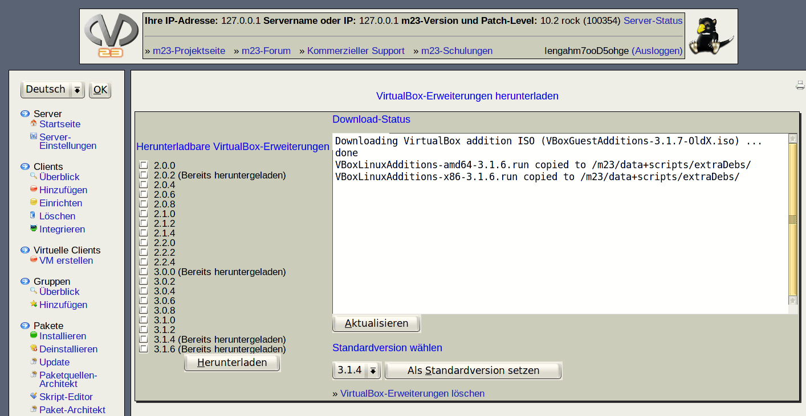

Mit dieser Seite können Sie die VirtualBox-Gasterweiterungen herunterladen, damit diese automatisch auf in VirtualBox aufgesetzten m23-Clients installiert werden. Durch die Installation der Gasterweiterung wird die Ein- und Ausgabe des Gastes verbessert. Um ein optimales Zusammenspiel zwischen dem VirtualBox-Gastgeber und dem VirtualBox-Gast zu ermöglichen, sollten die VirtualBox-Version und die Version der Gasterweiterung identisch sein. Falls von dem m23-Server keine VirtualBox-Erweiterung heruntergeladen werden kann, versucht ein solcher Client, die Erweiterungen direkt aus dem Internet zu beziehen. Sie können zudem eine Standardversion festlegen, die dann installiert wird, wenn der Client die passende VirtualBox-Version nicht ermitteln kann.

Unterabschnitte
root
2018-05-08